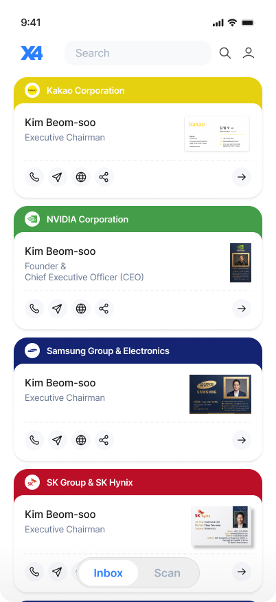
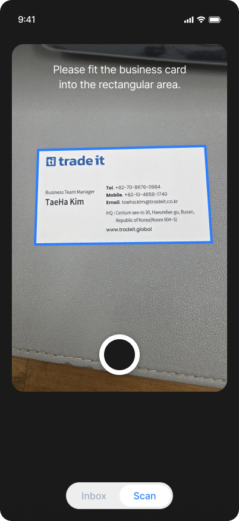
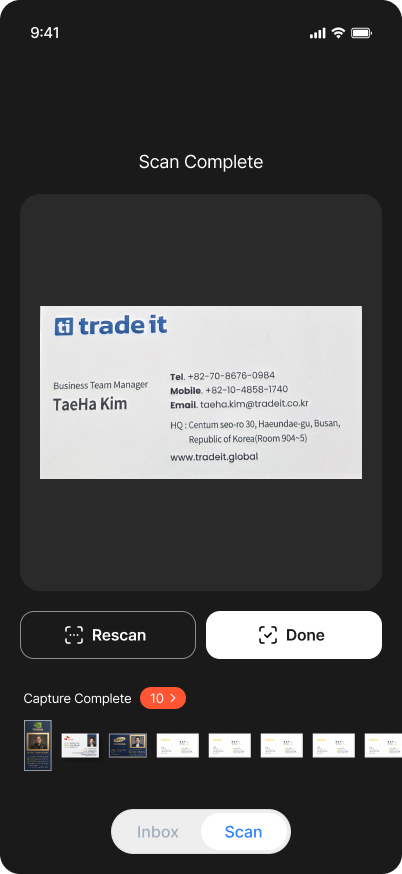
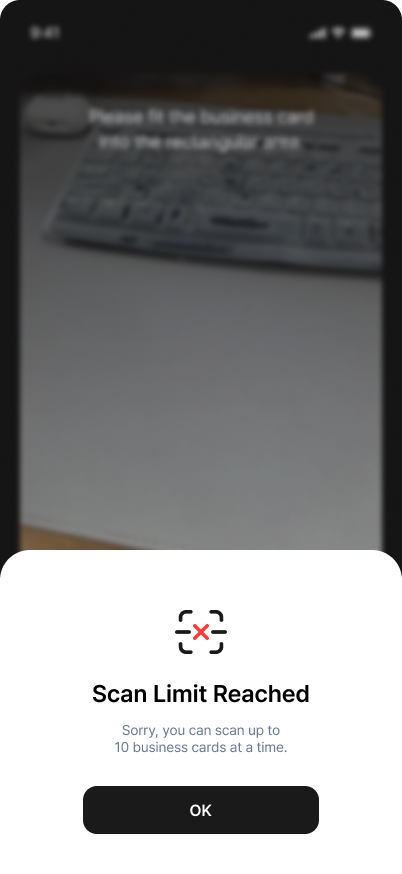
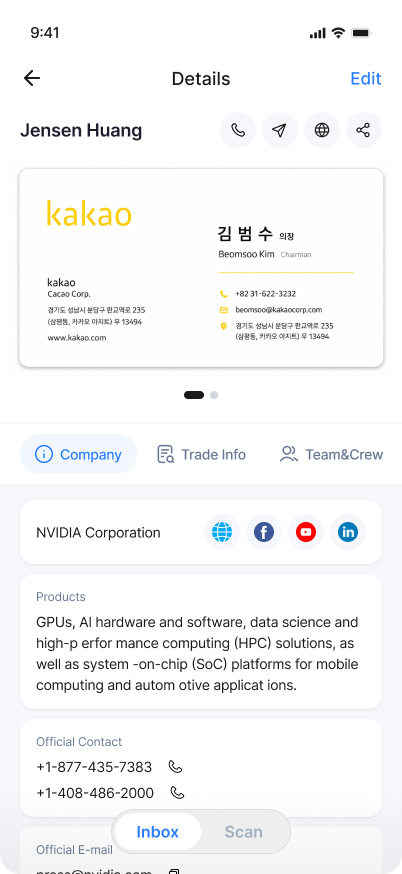
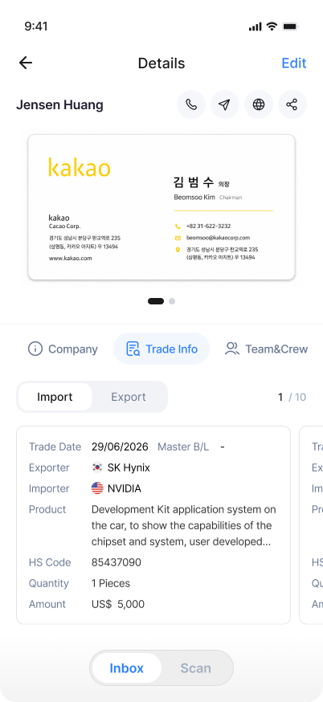
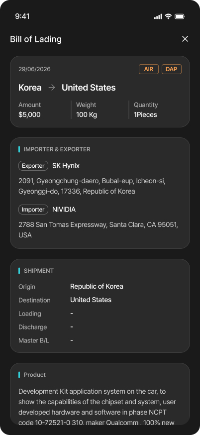
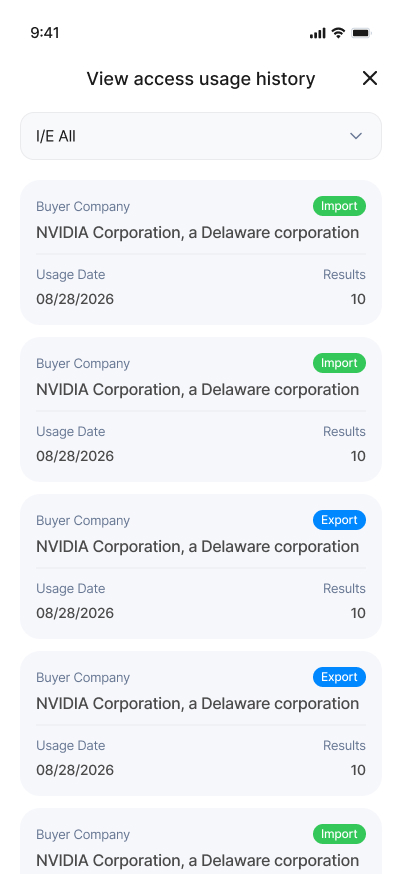
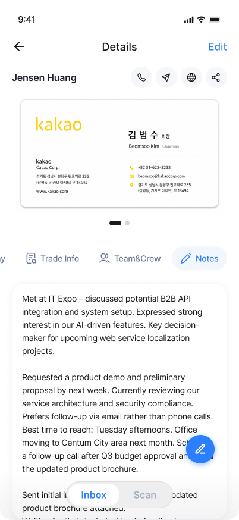
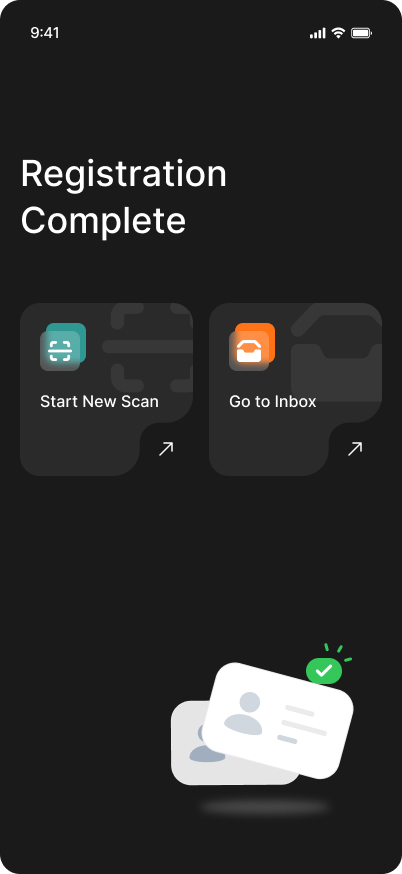

A
스캔과 인박스를 한 토글로
앱의 일은 명함을 찍는 것과 모아 보는 것 두 가지라, 하단 메뉴 대신 Inbox / Scan 토글 하나만 띄웠습니다. 어느 화면에서든 엄지 한 번으로 두 모드를 오갑니다.



/ Scan it. Know it. Trade it.
명함 한 장을 찍으면 상대 기업의 거래 데이터까지 이어지는 B2B 명함 앱입니다. 전시회에서 받은 명함 뭉치를 일괄 스캔해 정리하고, 등록된 기업의 수출입 이력·담당자·선하증권 정보를 명함 상세 안에서 바로 확인할 수 있게 설계했습니다.
전시회와 미팅에서 하루에 수십 장의 명함을 받는 해외영업 담당자. 받은 명함의 회사가 실제로 무엇을, 어디와 거래하는지 알아야 다음 연락을 정할 수 있습니다.
명함은 사진첩에만 남고, 촬영 → 정리 → 기업 확인이 전부 끊겨 있었습니다. 트레이드잇이 가진 무역 데이터를 명함 한 장에서 바로 꺼내 쓰게 하는 것이 이 앱의 역할이었습니다.
찍기와 확인하기를 오가는 일이 손에 익게 만드는 것. 여러 장을 빠르게 찍고, 한 장을 열면 그 회사의 거래 정보까지 이어지게 하는 것이 목표였습니다.
앱의 일은 명함을 찍는 것과 모아 보는 것 두 가지라, 하단 메뉴 대신 Inbox / Scan 토글 하나만 띄웠습니다. 어느 화면에서든 엄지 한 번으로 두 모드를 오갑니다.


받은 명함을 연달아 찍으면 아래에 썸네일로 쌓이고, 마지막에 한 번에 등록합니다. 한 번에 최대 10장까지 찍을 수 있고, 넘으면 이유를 바로 알려줍니다. 등록이 끝나면 새로 스캔할지, 인박스로 갈지 고르게 했습니다.


명함 상세를 Company · Trade Info · Team&Crew 탭으로 나눠, 연락처 아래에서 바로 그 회사의 수출입 이력을 확인하게 했습니다. 다른 앱이나 사이트로 나가 회사를 다시 검색할 필요가 없습니다.


명함 · 기업 정보는 라이트, 선하증권 같은 거래 데이터는 다크로 분리했습니다. 숫자와 코드가 많은 화면에서 대비를 높여 훑어 읽기 쉽게 하고, 지금 보는 정보가 명함인지 거래 기록인지 색으로도 구분됩니다.


Splash · 브랜드 마크와 슬로건만 남긴 진입 화면
Inbox · 기업 컬러를 헤더로 쓴 명함 카드 리스트
Details · Company · 명함 이미지 + 기업 프로필 탭 구조
Scan · 가이드 프레임으로 촬영 성공률을 높인 스캔
Scan Complete · 연속 촬영분을 썸네일로 모아 일괄 등록
Trade Info · 명함 상세 안에서 수출입 이력을 카드로
Bill of Lading · 다크 모드 상세 시트로 정보 밀도 확보

Notes · 만남의 맥락을 바로 적는 메모 탭
Usage History · 조회 이력과 Import/Export 구분 표기
로딩 상태 — 로고가 그레이에서 브랜드 블루로 채워지며 완료를 알립니다
Why
스피너 대신 로고 자체를 진행 바로 썼습니다. 회색 로고가 왼쪽부터 브랜드 컬러로 차오르며 채워지면 준비 완료 — 별도 카피 없이도 상태가 읽히고, 첫 화면에서 브랜드를 한 번 더 각인시킵니다.
앱 등록용 스크린샷 — 기능 한 줄 카피와 목업을 세트로 제작


스캔 → 자동 인식 → 기업 정보 연결까지, 한 흐름으로 이어지는 과정입니다.
01 · 스캔 시작
02 · 자동 인식

03 · 스캔 완료
04 · 기업 정보 연결